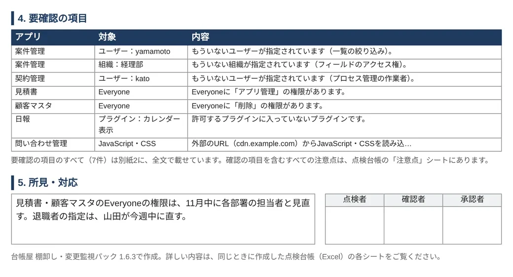

ISMSや内部統制のために、kintoneのアクセス権を見直して記録を残す方法
2026年11月10日
監査では「権限を見直したか」と「その記録があるか」を聞かれます。
kintoneでは、アプリごとのアクセス権を人ごとに並べ直し、結果と確認者を残すのが近道です。
見直しの手順
- 範囲を決める見直すアプリと、点検する人を決めます。点検する人が、すべてのアプリを閲覧できるかも確かめます（下の注意）。
- いまのユーザーを書き出すcybozu.com共通管理の［ファイルへの書き出し］で［ユーザー］を書き出します。［使用状態］が「0」の人は、使用停止中です。
- 人ごとに見直すアプリのアクセス権を、ユーザー・組織・グループごとの表に並べ、「続ける・変える・外す」を決めます。
- 直して、記録を保管する直した日と確認者を表に書き、承認をもらって保管します。次回は、この表と比べます。
記録に残す表の形
アプリごとではなく、人ごとに並べます。監査で聞かれるのは「この人に、この権限が要るか」だからです。
| 対象 | アプリ | できること | 見直しの結果 | 理由 | 確認者 | 確認日 |
|---|---|---|---|---|---|---|
| 山本（使用停止中） | 案件管理 | 閲覧・編集・アプリ管理 | 外す | 3月末で退職 | 佐藤 | 4/10 |
| 経理部（組織） | 経費精算 | 閲覧・編集・書き出し | 続ける | 精算の担当 | 佐藤 | 4/10 |
| Everyone | 顧客名簿 | 閲覧・書き出し | 変える | 書き出しは営業部だけに | 佐藤 | 4/10 |
表の内容は説明のための例です。
アクセス権は、アプリ・レコード・フィールドの3か所にあります。行の順番で結果が変わるので、順番も残します（くわしくは「kintoneのアクセス権を一覧で確認する方法」）。
特に見ておきたいのは、［アプリ管理］と［ファイル書き出し］です。アプリ管理の権限があれば、アプリの設定を変えたり、アプリを削除したりできます。
アプリの外の権限も、表の最後に足しておきます。
- cybozu.com共通管理者と、kintoneシステム管理者になっている人
- 最初からある［Administrator］が「停止中」のままか（サイボウズは、ふだんは使わず停止中にしておくよう案内しています）
見落としやすいところ
システム管理者でも、見えないアプリがある
kintoneシステム管理者でも、閲覧の権限がないアプリは、アプリの一覧に出ません（台帳屋が検証環境で確認）。一覧に出たアプリだけを見直すと、漏れが出ます。
見直しの範囲には「一覧に出ないアプリがないか」を確かめた結果も書いておきます。
使用停止にした人は、アクセス権に残る
退職した人を「停止中」にしても、アプリのアクセス権からは消えません（台帳屋が検証環境で確認）。停止中の人はログインできず、利用ユーザーにも数えられないため、気づきにくくなります。
残ったまま、REST APIでアクセス権を保存し直すと、エラー（GAIA_IL26）になります。手順2の一覧と照らし合わせて、外してください（くわしくは「退職者や異動者が設定されているアプリを探す方法」）。
直しても、アプリを更新するまで変わらない
アクセス権を直したら、アプリを更新して運用中のアプリに反映します。記録の「確認日」は、更新したあとの日付にします。
規格と基準で求められること
| 規格・基準 | アクセス権について書かれていること |
|---|---|
| ISMS ISO/IEC 27001:2022 附属書A 5.18 | アクセス権を、方針に沿って与え、見直し、変え、取り消す。解説では、入社・異動・退職のときと、アクセスの監査のときに見直すとされています |
| J-SOX 金融庁の実施基準 | ITに係る全般統制の例の1つに「内外からのアクセス管理などシステムの安全性の確保」が挙がっています |
このページは規格の解説ではありません。どの頻度で、どの形の記録が要るかは、自社の規程と監査を行う方に確かめてください。
プラグインで記録を作る
1つのアプリなら、台帳屋の権限チェッカー（無料）で、3か所のアクセス権を1画面に並べ、ExcelやCSVに保存できます。


点検台帳と報告書は、点検した時点のkintoneの設定を読み取った結果です。ISMSやJ-SOXなどの基準に適合していることを示すものではありません。
参考
- アプリにアクセス権を設定する（kintone ヘルプ）
- 管理者の種類と権限（kintone ヘルプ）
- ユーザーや組織などの情報をファイルに書き出す（cybozu.com ヘルプ）
- ［ユーザー］のファイルフォーマット（cybozu.com ヘルプ）
- ユーザーを使用停止にする（cybozu.com ヘルプ）
- Administratorとは（cybozu.com ヘルプ）
- アプリのアクセス権の設定を取得する（cybozu developer network）
- ISO 27001:2022 Annex A 5.18 Access Rights（ISMS.online、英語）
- 財務報告に係る内部統制の評価及び監査の基準・実施基準（金融庁、2019年12月の版、PDF）